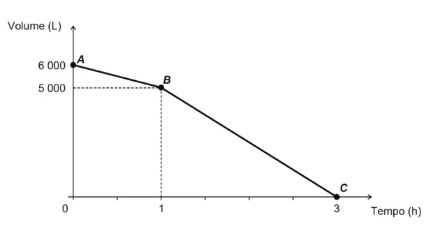

(Enem - 2016) Uma cisterna de 6 000 L foi esvaziada em um período de 3h. Na primeira hora foi utilizada apenas uma bomba, mas nas duas horas seguintes, a fim de reduzir o tempo de esvaziamento, outra bomba foi ligada junto com a primeira. O gráfico, formado por dois segmentos de reta, mostra o volume de água presente na cisterna, em função do tempo. Qual é a vazão, em litro por hora, da bomba que foi ligada no início da segunda hora?
